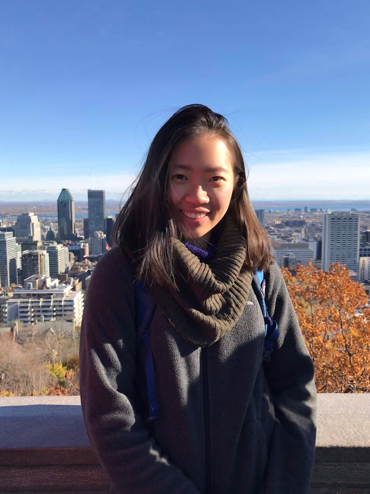

I am a PhD Student in the Stanford Computational Imaging Lab, advised by Professor Gordon Wetzstein. I'm interested in the co-design of hardware and software, particularly in utilizing emerging vision sensors to rethink imaging algorithms and computer vision tasks. Broadly speaking, I'm interested in computational imaging, computer vision, graphics, TinyML, and data science. My research is supported by the NSF Graduate Research Fellowship.
In my undergrad, I had the privilege to research in Professor Keren Bergman's Lightwave Research Lab, Professor Michal Bajcsy's Nanophotonics and Quantum Optics Lab and Dr. Darwin Serkland's optoelectronics lab at Sandia National Labs. Outside of research, I enjoy cartooning and painting.
CONTACT
Email: haleyso [at] stanford [dot] edu